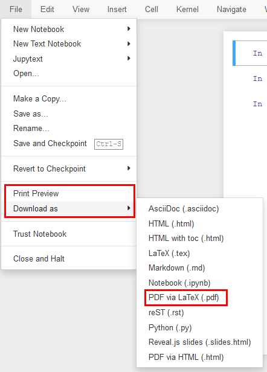

A collection of laboratory exercise templates for the course
Signal Processing#
Introduction#
Here you will find the laboratory exercise templates for the course Signal Processing, which is taught in the summer semester of the 1st year of the Master’s study program at the Faculty of Mechanical Engineering in Ljubljana.
The templates are prepared as interactive Jupyter Notebook documents. Their source code is published as well and is intended for preparing and carrying out the laboratory exercises.
Participation in the exercises
In the laboratory exercises we will work with the acquisition and processing of real signals. Therefore, come prepared by studying the exercise template in advance; its content also relates to the current lecture. Participation in the exercises will be assessed with weekly assignments.
The templates contain highlighted boxes with a special meaning. They hold the following:
Note
Additional useful information related to the material.
Task
Tasks that we will explore together during the exercises.
Task
Tasks that you will solve on your own during the exercises.
Assessment
Homework assignments and tasks intended for assessing participation in the exercises.
Assessment of continuous work in the exercises#
Moodle - Signal Processing#
Self-enrollment, password: PRSMM-26
Homework assignments#
Homework assignments
The content of the homework assignments will be individualized; you will find the data for your assignment in Moodle.
In accordance with the assignment instructions, prepare a short report (from 3 to at most 10 code cells) in which you first summarize the requirements of the assignment and your data. Include both the solution code and short comments on the assignment in the report (a suitable format is, e.g., a Jupyter Notebook).
Bonus: For a chance of a higher participation grade, pay attention to the suggested bonus tasks of the homework assignment.
HOMEWORK IS SUBMITTED via Moodle.
The submission deadline is the day of the next lecture of the course, unless the assignment defines otherwise.
The system allows you to submit several files. If you prepare the homework report in a programming environment (e.g., a Jupyter Notebook), submit the report in .pdf format as well to the Moodle.
You can easily convert a Jupyter Notebook file to PDF with File -> Print Preview -> Print to PDF.

Homework grading criteria
Grade [%] |
Comment |
|---|---|
< 50 |
You are not adequately prepared for the exercise and the minimum requirements of the assignment are not met / the report was not submitted properly. |
< 60 |
You are not adequately prepared for the exercise or the minimum requirements of the homework assignment are not met. |
(60, 70] |
The basic requirements of the assignment are met with deficiencies (e.g., inadequately presented assignment data, incompletely labeled plots, no comment on the main findings…). |
(70, 80] |
The basic requirements of the assignment are met, adequate report. |
(80, 90] |
The basic requirements of the assignment are met, additional content with deficiencies (e.g., poorly interpreted results…). |
(90, 100] |
Additional content is appropriately applied, presented and interpreted. |
In case of a late submission, the homework grade is reduced (10% / day).
Seminar#
Optional seminar
Part of the continuous-work grade is earned through an optional individual seminar. Prepare the seminar on a topic chosen from the content of the laboratory exercises and present it in a 30-minute presentation during the regular laboratory exercise slot.
Requirements:
The presentation serves as an introduction to the laboratory exercise and must be detailed enough to enable independent completion of the individual part of the exercise.
You carry out the seminar in the Jupyter Notebook environment, with appropriate descriptions of the theoretical background of the methods and practical examples.
You may use the published laboratory exercise template as a starting point, but the use of additional, properly cited sources, examples and literature is mandatory.
Criteria:
The seminar is assessed according to the following weighted criteria:
Criterion |
Weight |
|---|---|
Clarity and structure of the presentation |
25% |
Interest and didactic value |
20% |
Correctness of content |
30% |
Technical execution (Jupyter Notebook, examples, citations) |
25% |
Grading scale:
Grade [%] |
Comment |
|---|---|
< 50 |
The presentation is not sufficient for carrying out the exercise and the minimum requirements are not met (missing sources, deficient Jupyter Notebook). |
< 60 |
The presentation is not sufficient for carrying out the exercise or the minimum requirements are not met (missing citations, incomplete explanation of the methods). |
(60, 70] |
The basic requirements are met with deficiencies (e.g., superficial explanation of the background, examples without sufficient comments, inadequate citing). |
(70, 80] |
The basic requirements are met, the presentation is sufficient for carrying out the exercise, sources are properly cited. |
(80, 90] |
The basic requirements are met, additional content (e.g., comparison of methods, additional examples) with deficiencies in interpretation or execution. |
(90, 100] |
Excellent presentation with additional content, examples are properly interpreted, clear didactic value, technically flawless execution. |
If you do not opt for the seminar, the grade \(SN=0 %\) is used when calculating the final participation grade.
Homework assignment
In the week when you defend the individual seminar with a grade of at least 80%, it also counts as a completed homework assignment. Instead of the homework report, you submit only a PDF document stating that you completed the individual seminar that week.
Contents#
Laboratory exercise handouts
- Introduction to LabVIEW
- LabVIEW and Arduino, Python
- Fourier integral transform
- Properties of the Fourier transform
- Linear time-invariant systems - signal acquisition
- Linear time-invariant (LTI) systems 2 - frequency response functions
- Uniform sampling and quantization
- DFT and fundamentals of random processes
- Random excitation - signal acquisition
- Random excitation - estimation of frequency response functions
About this collection